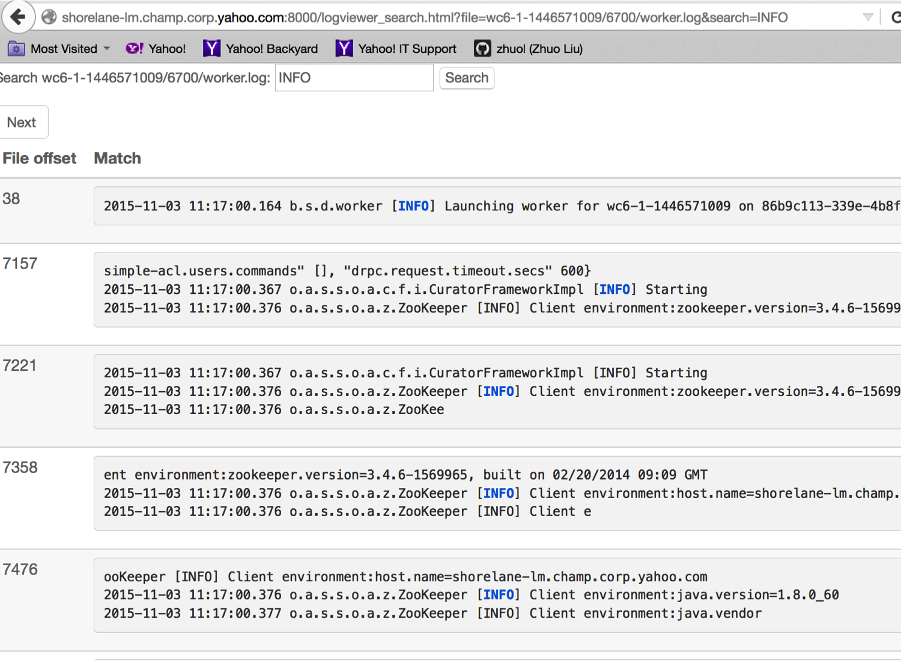
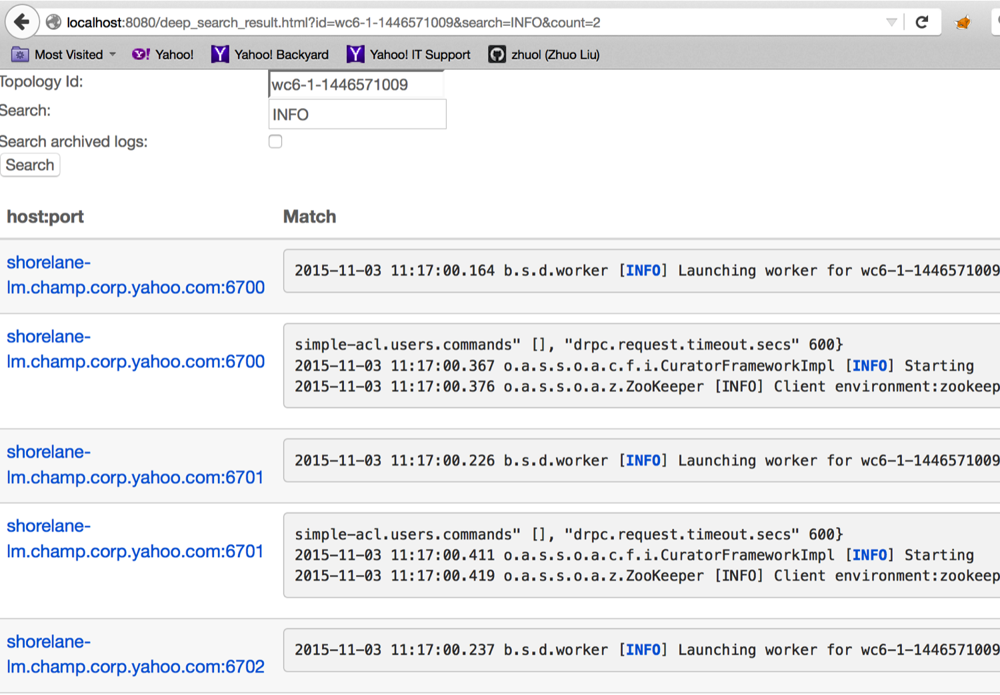

Logs in Storm are essential for tracking the status, operations, error messages and debug information for all the daemons (e.g., nimbus, supervisor, logviewer, drpc, ui, pacemaker) and topologies' workers.
All the daemon logs are placed under ${storm.log.dir} directory, which an administrator can set in the System properties or in the cluster configuration. By default, ${storm.log.dir} points to ${storm.home}/logs.
All the worker logs are placed under the workers-artifacts directory in a hierarchical manner, e.g., ${workers-artifacts}/${topologyId}/${port}/worker.log. Users can set the workers-artifacts directory by configuring the variable "storm.workers.artifacts.dir". By default, workers-artifacts directory locates at ${storm.log.dir}/logs/workers-artifacts.
Daemon and worker logs are allowed to view and download through Storm UI by authorized users.
To improve the debugging of Storm, we provide the Log Search feature. Log Search supports searching in a certain log file or in all of a topology's log files:
String search in a log file: In the log page for a worker, a user can search a certain string, e.g., "Exception", in a certain worker log. This search can happen for both normal text log or rolled zip log files. In the results, the offset and matched lines will be displayed.

Search in a topology: a user can also search a string for a certain topology by clicking the icon of the magnifying lens at the top right corner of the UI page. This means the UI will try to search on all the supervisor nodes in a distributed way to find the matched string in all logs for this topology. The search can happen for either normal text log files or rolled zip log files by checking/unchecking the "Search archived logs:" box. Then the matched results can be shown on the UI with url links, directing the user to the certain logs on each supervisor node. This powerful feature is very helpful for users to find certain problematic supervisor nodes running this topology.
